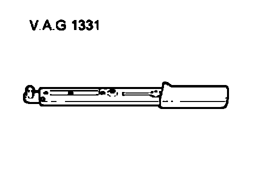
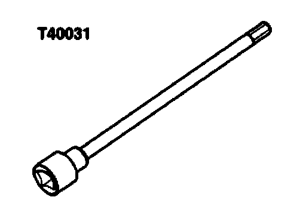
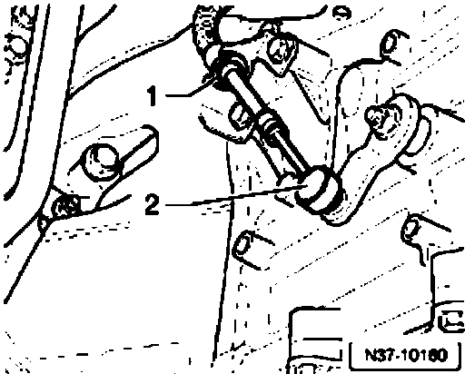
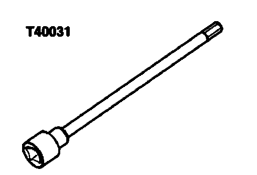
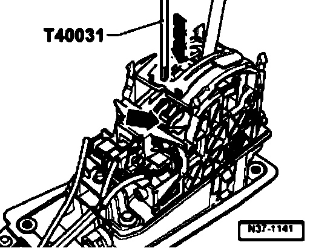

Shifter A/T: Adjustments
Selector lever cable, checking and adjusting
Special tools, testers and auxiliary items required

^ Torque wrench V.A.G1 331

^ Socket and key T40031
Checking
- Shift selector lever into "P" position.
- Remove sound insulation below transmission.

- Remove selector lever cable - 2 - from selector shaft lever.
- Shift selector lever from "P" to "S".
^ Selector lever mechanism and selector lever cable must move freely. If necessary replace selector lever cable or service selector mechanism.
- Shift selector lever into "P" position.
- Bring selector shaft lever in position "P" on transmission. Locking lever must engage in park lock wheel, both front wheels are blocked (cannot be turned together in a direction).
^ It must be possible to push selector lever cable onto selector shaft lever. Adjust selector lever cable if necessary.
- Carefully push selector lever cable onto selector shaft lever. Be careful not to bend selector shaft lever, or selector mechanism will not be able to be adjusted correctly.
- Adjust selector lever cable, Adjusting.
Adjusting
Special tools, testers and auxiliary items required

^ Socket and key T40031
^ Selector lever cable is disconnected from selector shaft lever.
- Shift selector lever into "S" position
- Position lever/selector shaft at transmission to "D".
- Remove selector lever handle. Refer to Selector lever handle, removing and installing.
- The procedure for disconnecting batteries must be adhered to.
- Disconnect battery Ground (GND) strap with ignition switched off
- Remove ashtray and remove shift mechanism cover from center console
- Remove cover from shift mechanism. Refer to Cover, removing and installing.
- Remove frame from shift mechanism. Refer to Frame, removing and installing.

- Loosen clamping bolt approximately one turn on selector lever cable.
- Carefully push selector lever cable onto selector shaft lever. Be careful not to bend selector shaft lever, or selector mechanism will not be able to be adjusted correctly.
- Align selector lever by slightly moving selector lever forward and backward in position "D" without leaving position "D".
- Tighten clamping bolt to 10 Nm with lever in this position. Socket insert T40031 can be used for this.
Installation is performed in reverse sequence.
- Install ashtray and shift mechanism cover in the center console
- Observe work sequence after connecting the battery